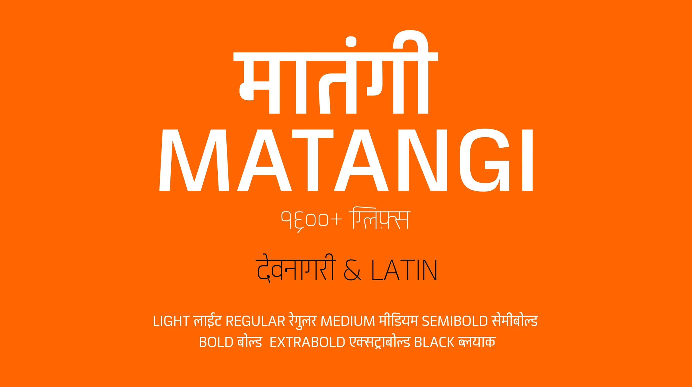
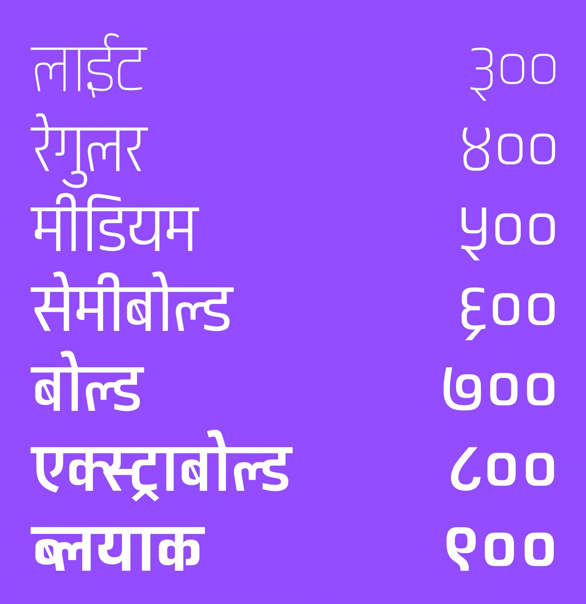
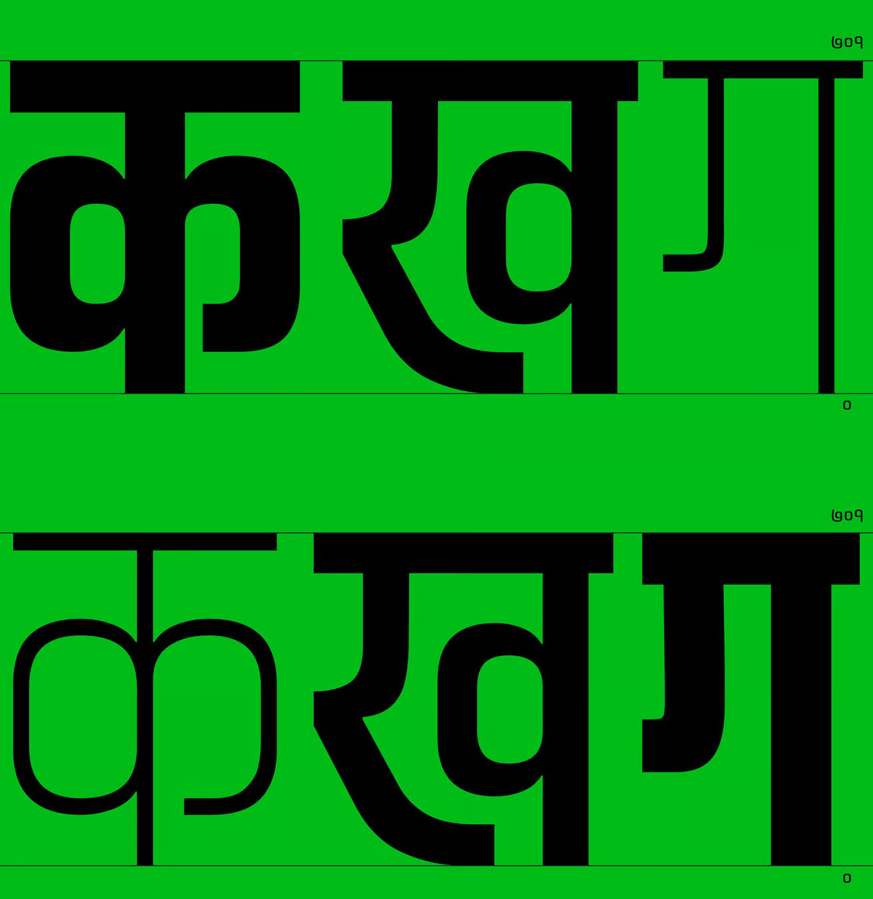
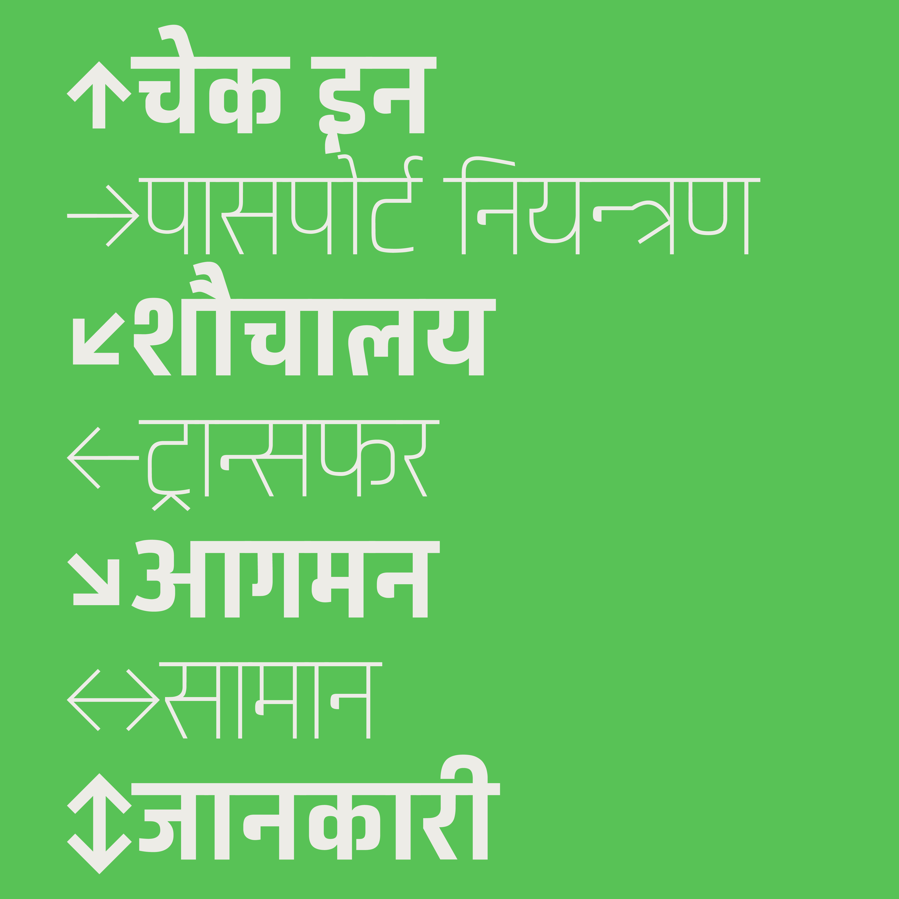
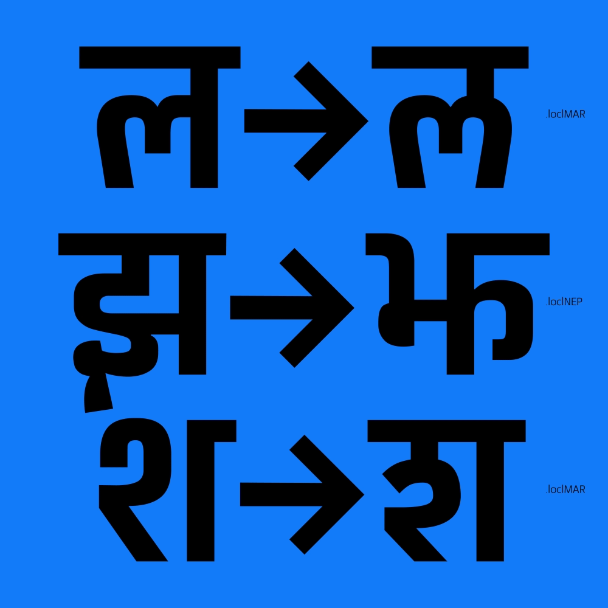
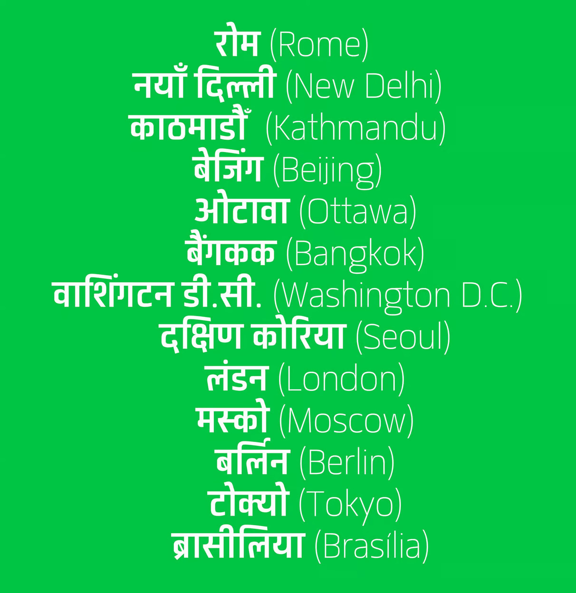

Matangi is a variable typeface with Latin and Devanagari support. It comes in 7 static weights: ExtraLight, Light, Regular, Medium, Bold, ExtraBold and Black. A slightly condensed sans-serif typeface, Matangi is Nepal's first variable Devanagari and Latin typeface project. Many of the glyphs are more constructed and rationalist than typical. It has support for extended Sanskrit ligatures and supports Nepali, Sanskrit, Hindi, Marathi, Awadhi, Dotyali, Eastern Tamang, Goan Konkani, Maharashtrian Konkani, Sindhi, and Latin, ranging to support 200+ languages and hopefully will keep extending with time. Matangi has over 1600+ glyphs and supports Devanagari ligatures and matras seamlessly. Just like the Latin, the Devanagari is based on pure geometry, mainly squares and circles.
Each letterform has its own contrast with subtle inktrap applied to stroke joints where necessary to maintain an even typographic color. The Devanagari base character height and the Latin x height are maintained equal.
To contribute, please see github.com/thegraphicant/Matangi





